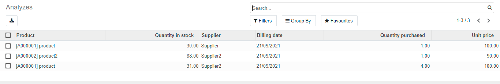

Product supplier report
Odoo 14.0 Community
Author: SARL FOCUS SYSTEM - contact@focussystem.dz
Description
This addon displays a list that summarizes the purchases of each supplier by product.
Scrrens
Each time a product is purchased from a specific supplier, the following information is added to the list: product, quantity in stock, supplier, billing date, quantity purchased, unit price.
